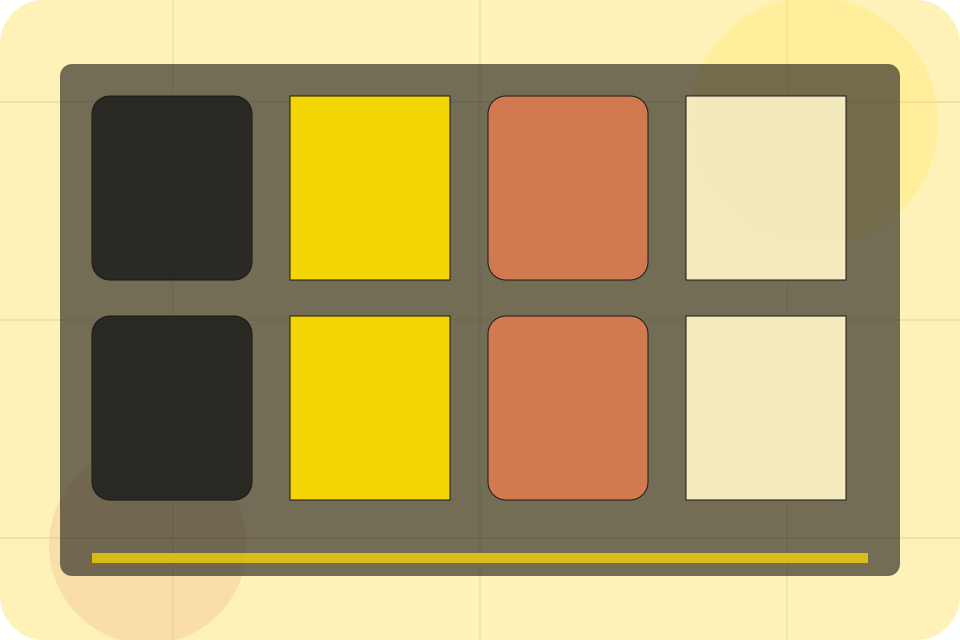
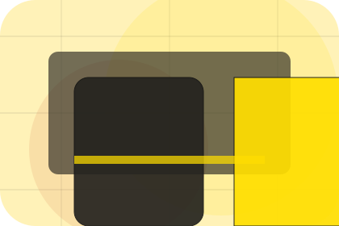
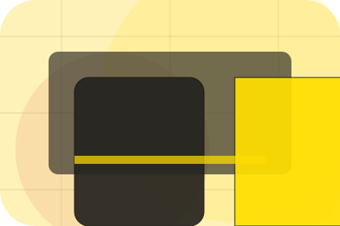
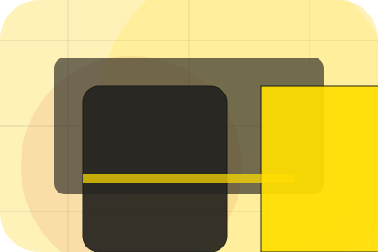
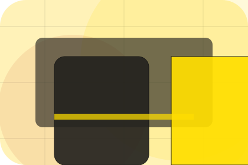
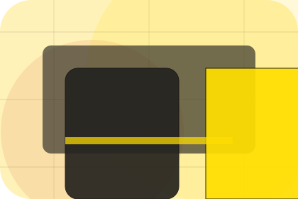
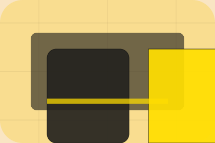

Journal / 01
Journal by Linea
Journal shaped for fashion, apparel & accessories decisions.
Journal opens as a clear fashion decision hub: what Linea offers, who it helps, why it matters, and which route to take first.
The first screen combines positioning, proof, primary action, and fast internal navigation, so people can act immediately or compare the rest of the journal route with context.
Curated indexProject contextEnquiry path
Oversized campaign hero
Browse the looks
Select the closest route and Linea keeps the next step, proof, and follow-up expectation aligned with taste, status and movement.

Journal / 02
Trends for deeper decisions
Trends gives researching visitors a practical route into guides, checklists, and comparison material without leaving the site structure.
Each resource behaves like a useful internal link, giving cold and warm visitors a way to learn, compare, and return to the action path.
Explore JournalGuide
A useful entry point for visitors who need more context before they shop the collection.

Checklist
A scannable comparison aid that makes research usable before the next decision.
Questions
A route back to support, services, or contact when the visitor is ready to act.
Journal / 03
Styling for deeper decisions
Styling gives researching visitors a practical route into guides, checklists, and comparison material without leaving the site structure.
Each resource behaves like a useful internal link, giving cold and warm visitors a way to learn, compare, and return to the action path.
Explore JournalA useful entry point for visitors who need more context before they shop the collection.
A scannable comparison aid that makes research usable before the next decision.
A route back to support, services, or contact when the visitor is ready to act.
Journal / 04
Behindscenes for deeper decisions
Behindscenes gives researching visitors a practical route into guides, checklists, and comparison material without leaving the site structure.
Each resource behaves like a useful internal link, giving cold and warm visitors a way to learn, compare, and return to the action path.
Explore JournalGuide
A useful entry point for visitors who need more context before they shop the collection.
Checklist
A scannable comparison aid that makes research usable before the next decision.
Questions
A route back to support, services, or contact when the visitor is ready to act.
Journal / 05
Craft for deeper decisions
Craft gives researching visitors a practical route into guides, checklists, and comparison material without leaving the site structure.
Each resource behaves like a useful internal link, giving cold and warm visitors a way to learn, compare, and return to the action path.
Explore JournalGuide
A useful entry point for visitors who need more context before they shop the collection.
Checklist
A scannable comparison aid that makes research usable before the next decision.
Questions
A route back to support, services, or contact when the visitor is ready to act.
Journal / 06
Materials for deeper decisions
Materials gives researching visitors a practical route into guides, checklists, and comparison material without leaving the site structure.
Each resource behaves like a useful internal link, giving cold and warm visitors a way to learn, compare, and return to the action path.
Explore Journal

Guide
A useful entry point for visitors who need more context before they shop the collection.
Journal / 07
Interviews for deeper decisions
Interviews gives researching visitors a practical route into guides, checklists, and comparison material without leaving the site structure.
Each resource behaves like a useful internal link, giving cold and warm visitors a way to learn, compare, and return to the action path.
Explore JournalGuide
A useful entry point for visitors who need more context before they shop the collection.

Checklist
A scannable comparison aid that makes research usable before the next decision.

Questions
A route back to support, services, or contact when the visitor is ready to act.
Journal / 08
Compare service routes
Products explains the practical scope, best-fit situations, and expected outcome so fashion visitors can compare options without decoding jargon.
The section keeps the offer concrete: what is included, who it is best for, what decision it supports, and which linked route gives the deeper detail.
Explore JournalBest Fit
Who should use products and when it belongs in the journal journey.
Oversized campaign hero
Browse the looks
Select the closest route and Linea keeps the next step, proof, and follow-up expectation aligned with taste, status and movement.
Journal / 09
Read for deeper decisions
Read gives researching visitors a practical route into guides, checklists, and comparison material without leaving the site structure.
Each resource behaves like a useful internal link, giving cold and warm visitors a way to learn, compare, and return to the action path.
Explore JournalGuide
A useful entry point for visitors who need more context before they shop the collection.
Checklist
A scannable comparison aid that makes research usable before the next decision.
Questions
A route back to support, services, or contact when the visitor is ready to act.
Journal / 10
Shop Collection
Linea closes the journal route with a clear action, a quick reminder of the value, and a low-friction way to shop the collection.
Visitors who are ready can use the primary action. Visitors who are still comparing can scan the section links, proof, and support routes before they shop the collection.
Shop CollectionThe final block keeps the choice simple: act now, compare one more proof route, or send enough detail for a focused response.
Shop Collectiontaste, status and movement
Shop Collection
A fashion lookbook site with warm yellow, playful scale shifts, collection cards, and sizing routes. Journal ends with a direct path to shop the collection, plus enough context for visitors who still need to compare.

Shop CollectionImportant notes before you act
Information is provided for planning and should be reviewed for the final client, location, and operating rules.